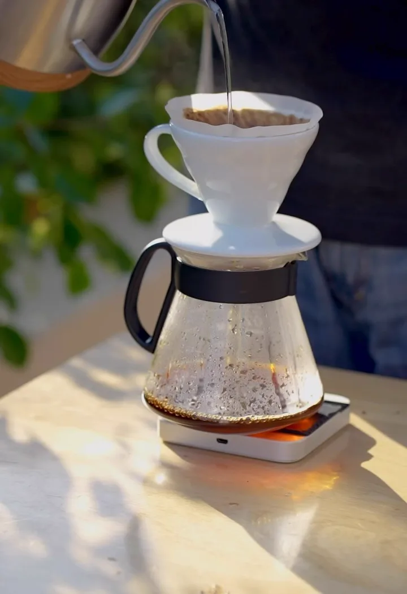

Sourcing
By hand
Every cherry is picked one at a time, because a machine cannot tell which ones are ready. The leaves engraved on our cup are those cherries.
Three things, done in that order, in one room. Some come for the coffee. Most come back for the room it is made in.
Roasted on premise. Cherries picked by hand.
The leaves and cherries engraved on our cup are not decoration. They are the first half of the job. Every cherry is picked by hand, one at a time, because a machine cannot tell you which ones are ready.
We roast on premise, in the same building you drink in. Small batches, tasted before any of it reaches the counter.
The whole bakery and the whole savoury menu, entirely eggless. Not a substitution and not a separate shelf, just how we bake, so nobody at the table has to ask first.
Amritsar runs on Doubleshot.
Sourcing, roasting and brewing in Punjab, and a bakery that is entirely eggless.
By hand
Every cherry is picked one at a time, because a machine cannot tell which ones are ready. The leaves engraved on our cup are those cherries.

On premise
Roasted in the same building you drink in, in small batches, and tasted before any of it reaches the counter.

24 hours
That is how long the cold brew steeps. The V60 is poured by hand, hot or iced, for ₹260.
The full menu


The whole bakery and the savoury menu come out of our own kitchen without a single egg, so nobody at the table has to ask first.
The bakery


SCO 49, B Block, Ranjit Avenue. Cane chairs, a long counter and a full house most evenings. Open every day, 9:00 to 21:00.
All locations